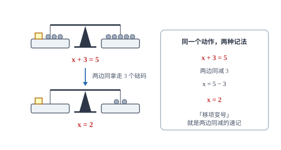

一元一次方程
方程是带未知数的等式，解方程就是反复用等式的两条性质，把未知数一步步孤立出来。
| 所属主题 | 方程与不等式 |
|---|---|
| 所属模块 | 代数 |
| 课标学段 | 第四学段（7~9 年级） |
| 前置知识 | 整式的运算 |
| 核心素养 | 运算能力模型观念 |
教材定位
人民教育出版社《人教版（2024版）义务教育教科书·数学》
七年级上册第5章 一元一次方程5.1 方程5.2 解一元一次方程
对应七上 5.1 与 5.2：等式的性质是解方程的依据，移项、去括号、去分母是解法步骤。
说明
含有未知数的等式叫方程；只含一个未知数、未知数的次数是 1、且两边都是整式的方程，叫一元一次方程。它总可以整理成 ax+b=0\ (a≠ 0) 的形式，这个形式叫一般形式，其中 a 叫一次项系数、b 叫常数项。使方程左右两边相等的未知数的值叫方程的解，「解方程」就是求出这个值的过程。
解方程只依靠两条等式性质。性质一：等式两边同时加上（或减去）同一个数或同一个整式，等式仍然成立。性质二：等式两边同时乘（或除以）同一个不为零的数，等式仍然成立。移项、去括号、去分母、系数化为 1，每一步都是在用这两条性质，没有第三种操作。理解这一点，就不会把「移项变号」当成需要死记的规则。
使用场景
当题目给出一个等量关系、要求求出某个未知的具体数值时，先设未知数、再把这个关系翻译成方程。常见的翻译方式有：总量等于各部分之和、两个量的差是定值、按比例分配、路程等于速度乘时间、售价减进价等于利润。列方程的关键不在解，而在于把中文的「比……多」「是……的几倍」准确地写成运算符号。
当题目要求比较两种方案的收费、在什么条件下两者相同或哪个更省时，先按两种方案分别写出费用表达式，令它们相等解出临界值，临界值两侧就是两种方案各自占优的区间。这类问题在电信套餐、出租车计费、会员卡与单次消费的选择中反复出现。
注意点
去分母时，方程两边的每一项都要乘最简公分母，不含分母的常数项最容易漏乘。例如解 x+1/2-1=2x-1/3，两边乘 6 后应得 3(x+1)-6=2(2x-1)，那个 -1 必须变成 -6，写成 -1 就把方程改掉了。
移项必须变号，因为移项的本质是两边同加（或同减）一个数。另外，系数化为 1 时是两边同除以系数，不要把它与「分母移到另一边」混起来：-3x=6 两边除以 -3 得 x=-2，符号要一起处理。
证明

图 1：天平两边同时拿走 3 个砝码，平衡不破坏——「移项」只是两边同减的速记（对应方程 x+3=5）
证明
结论 1解 x+3=5 只需两边同时减去 3，得 x=2。
以 x+3=5 为例。由等式性质一，两边同时减去 3，左边剩下 x，右边变成 5-3=2，于是 x=2。整个过程没有做任何「搬家」的动作，只是两边同时减了同一个数。
关键一步依据是等式性质一：等式两边同时减去同一个数，等式仍然成立。条件是两边做的是同一个运算，所以变形前后的方程是同一个方程，解不会丢也不会多。
结论 2「移项要变号」只是「两边同时加减同一个数」的简写，不是新规则。
把同样的动作写成简写：从 x+3=5 直接得到 x=5-3。看起来像把 3 从左边搬到右边并改成 -3，实际上它就是「两边同减 3」的结果。这就是「移项变号」的全部来历——不是新规则，而是等式性质的速记。
关键一步依据仍是等式性质一：x+3=5 两边同减 3，右边写出来就是 5-3，所以把左边的 +3 移到右边并改成 -3，正是同减 3 的另一种写法。把移项当新规则，就会在漏改符号时出错。
结论 3解一元一次方程的五步（去分母、去括号、移项、合并同类项、系数化为 1）每一步都能说清依据。
同理，2x=6 两边同除以 2 得 x=3，这也是等式性质二。所以解一元一次方程的五步（去分母、去括号、移项、合并同类项、系数化为 1），每一步都能说清依据，不存在凭感觉的步骤。
关键一步依据是等式性质一（两边同加减同一个数）与等式性质二（两边同除以同一个不为零的数）：除以 2 要求 2≠ 0，去分母要求公分母不为零；去括号与合并同类项依据整式运算法则。每一步都做在等式两边，所以每步都可逆。
结论 4由于每一步都是等值变形，解出的 x 一定满足原方程。
正因为每一步都是等值变形，解出的 x 一定满足原方程。反过来，如果某一步两边没有同时做同一个运算，方程就被改成了另一个方程，解出来的值自然不是原方程的解——这是所有「解完代回去不对」问题的根源。
关键一步依据是等值变形的含义：变形后的方程与原方程的解集完全相同，所以原方程的解必然被保留下来；若某一步只对一边动了手，等式就不再等价，解集随之改变，代回去对不上正是这个原因。
动手实验
用天平做实验：左盘放一个未知重量的物体加 3 个 1 克砝码，右盘放 5 个 1 克砝码，天平平衡。两边同时拿走 3 个砝码，天平仍然平衡，此时左盘只剩物体、右盘剩 2 个砝码，读数得物体 2 克。把「同时拿走」换成「同时放上」「同时把两盘都分成两半」，天平依旧平衡——这就是两条等式性质的物理版本（全过程见图 1）。
解题思路
解一元一次方程按固定顺序走五步：去分母（两边乘各分母的最小公倍数，注意每一项都乘）、去括号（括号前是负号时逐项变号）、移项（含未知数的项移到一边、常数移到另一边，跨过等号要变号）、合并同类项、系数化为 1。顺序不能乱，是因为后一步依赖前一步把式子整理成更简单的形状。
解完必须检验。检验不是重算一遍，而是把求得的解代回原方程，分别算左边和右边，看两个值是否相等。代回时要代回原方程而不是化简后的式子——只有原方程才是题目本身。若两边不等，说明中间某一步两边没有同时做同一个运算，重点回查去分母和去括号这两步。
列方程解应用题走四步：设未知数（通常设所求量为 x，必要时用含 x 的式子表示其他量）、找等量关系（把题目里那句「一样多」「多多少」「是几倍」找出来）、列方程、解并检验（既要检验是否为方程的解，也要检验是否符合实际意义，例如人数必须是正整数、长度必须为正）。
按场景的例题
例 1（场景：竞技与游戏） 计算竞赛中的解方程题
解方程：2x-1/3-x+2/2=1。
解：分母 3 与 2 的最小公倍数是 6，两边同乘 6，注意右边的 1 也要乘：2(2x-1)-3(x+2)=6。去括号：4x-2-3x-6=6。合并同类项：x-8=6。移项得 x=14。检验：左边 =28-1/3-14+2/2=9-8=1，等于右边。
答：x=14。
例 2（场景：销售与利润） 打折销售中由利润率反推标价
某商品进价 100 元，按标价打八折出售，仍可获得 20% 的利润。求标价。
解：设标价为 x 元。售价是 0.8x，利润是售价减进价，利润率为 0.8x-100/100。由「利润率是 20%」列方程：0.8x-100/100=0.2，两边乘 100 得 0.8x-100=20，即 0.8x=120，x=150。检验：售价 150× 0.8=120 元，利润 20 元，占进价的 20%，符合题意。
答：标价是 150 元。
例 3（场景：生活优化） 出租车分段计费求里程
某市出租车起步价 10 元，含 3 千米；超过 3 千米的部分每千米收费 2.4 元。小明乘车付费 34 元，他乘坐了多少千米？
解：设乘坐 x 千米（x>3）。费用由起步价与超程费两部分组成：10+2.4(x-3)=34。移项得 2.4(x-3)=24，两边除以 2.4 得 x-3=10，所以 x=13。检验：前 3 千米 10 元，后 10 千米 24 元，合计 34 元，符合。
答：乘坐了 13 千米。
常用推论
若 x=2 是方程 3x+a=7 的解，把 x=2 代入得 6+a=7，所以 a=1。「已知解求参数」只需代回，不必解方程。
关于 x 的方程 ax=b 的解的情况可以一次说清：当 a≠ 0 时有唯一解 x=b/a；当 a=0 且 b=0 时，任何数都是解；当 a=0 且 b≠ 0 时，方程无解（因为 0 乘任何数都等于 0，不可能等于非零的 b）。
三个连续整数的和是 72，设中间一个为 x，则 (x-1)+x+(x+1)=72，得 3x=72、x=24，三个数是 23、24、25。用「中间量」作未知数，式子比设最小数为 x 更简洁。
易错点
错解 x+1/2-1=2x-1/3 时，两边乘 6 得 3(x+1)-1=2(2x-1)。
为什么错去分母时只给含分母的项乘了 6，常数项 -1 没有乘。去分母的依据是等式性质二，两边每一项都要乘同一个数。
正确3(x+1)-6=2(2x-1)，展开得 3x+3-6=4x-2，解得 x=-1。代回检验：0/2-1=-1，-3/3=-1，两边相等。
错解 5x-2=3x+4 时，写成 5x+3x=4-2。
为什么错3x 从右边移到左边没有变号，-2 从左边移到右边也没有变号。移项必须变号。
正确5x-3x=4+2，即 2x=6，x=3。代回检验：左边 15-2=13，右边 9+4=13，相等。
错解 -3x=6 时，得 x=-1/2，理由是「把 -3 移过去变成除以 -3 的倒数」。
为什么错系数化为 1 是两边同除以系数 -3，不是取倒数。-3x=6 两边除以 -3 得 x=-2。
正确x=6/-3=-2。代回检验：-3×(-2)=6，成立。
直观理解
把方程想成一架平衡的天平：等号就是支点，左右两边是重量相等的两个托盘。解方程的每一步，都是「两边同时做同一件事」——同时拿走、同时加倍、同时分成两半。只要动作对称，天平永远平衡；而未知数就在这一系列对称动作中被单独留在一个托盘上。